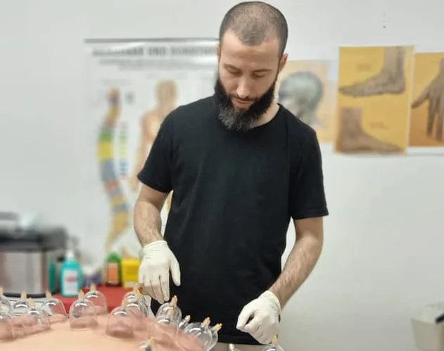

Die Art, wie ich jemandem begegne und ihn behandle, sagt aus, was für ein Mensch ich bin.
Seit 2006 begleite ich Menschen auf ihrem Weg zu mehr Wohlbefinden. Was als persönliche Entdeckung der Hijama begann, ist heute meine Berufung — mit grösstem Wert auf Hygiene, Achtsamkeit und eine Behandlung, die wirklich auf den Menschen eingeht.
Mein Werdegang
2006
Entdeckung der Hijama-Therapie und Beginn der persönlichen Auseinandersetzung.
2006–2010
Erlernen der traditionellen Hijama- (Schröpf-) Techniken.
seit 2010
Anwendung der Behandlungen bei Familie und Bekannten — mit durchweg positiven Ergebnissen.
2017
Zertifizierung in Schröpftherapie.
2020
Ausbildung in Akupressur an zwei Instituten (Paracelsus ZH und BioMedica BS).
Meine Behandlungsmethoden
HijamaAkupressurMassage
Deep TissueGua Sha / GrastonMoxaNaturmedizin
Lern mich kennen
Über 1000 zufriedene Menschen vertrauen auf Professionalität, Hygiene und Wirkung.